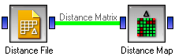
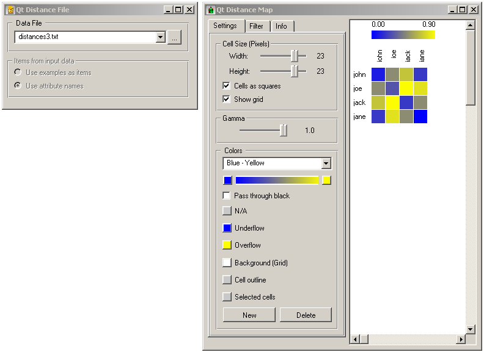
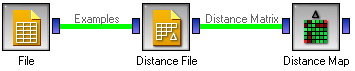
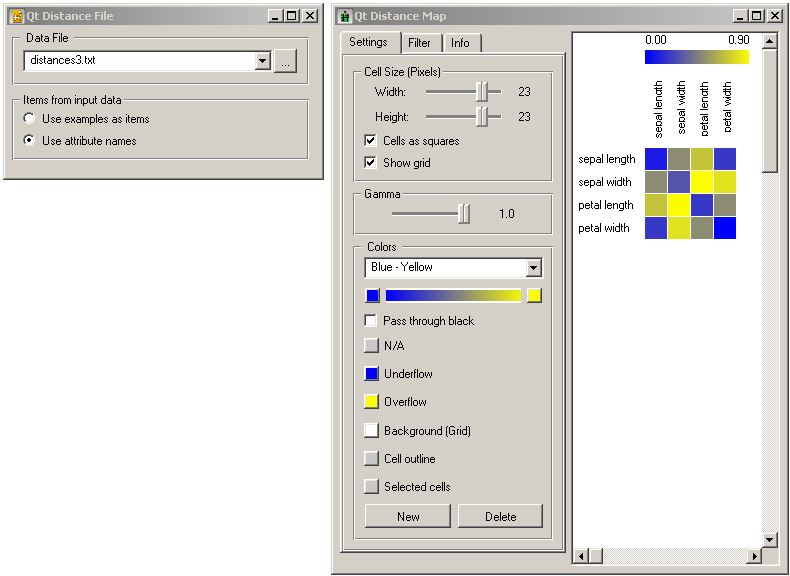

This is documentation for Orange 2.7. For the latest documentation, see Orange 3.
Distance File¶
Computes distances between examples in the data set
Signals¶
- Inputs:
- Examples
A list of examples
- Outputs:
- Distance Matrix
A matrix of example distances
Description¶
Loads a distance matrix from a text file.
The first line in the file has to start with the number of items - the dimension of the matrix. It can be followed by the word labeled or labelled if the file also contains the labels for the items. The rest of the file is the matrix, where the elements are separated by tabulators. If the items are labelled, the label has to be put in front of each line. The matrix can be given with the lower or the upper part, or both. Here are two examples.
0.1
0.5 0.3
0.7 0.9 0.2
0.2 0.8 0.6 0.5
john 0.1
joe 0.5 0.3
jack 0.7 0.9 0.2
jane 0.2 0.8 0.6 0.5
The file is selected using button , which opens a file browser. File extension is arbitrary.
Sometimes we get the labels in a separate example table. Say that we have a set of 15 examples in a data file, and the distance matrix represents distances between these examples. In this case, we would connect the widget providing these 15 examples (say a File) to the input of Distance File and select Use examples as items in Items from input data. Distance File would attach the examples to the distance matrix, so further widget can, for instance, use a user-selected attribute to label the items.
In another scenario, the distance matrix would represent distances between attributes of some data table. We similarly connect a data providing widget to Distance File, but select Use attribute names. Distance File then labels the items with the names of the attributes.
Examples¶
The first schema loads the labelled distance file above and shows it with the Distance Map.
 In the second schema the labels come from a file. The labels given in the file loaded by Distance File are replaced by the attribute names (since we checked Use attribute names.
In the file widget we loaded the Iris data set, and the resulting distance map looks like this.
The widget can of course be connected to any other widget that can do something useful with the distances, such as MDS or Hierarchical Clustering.